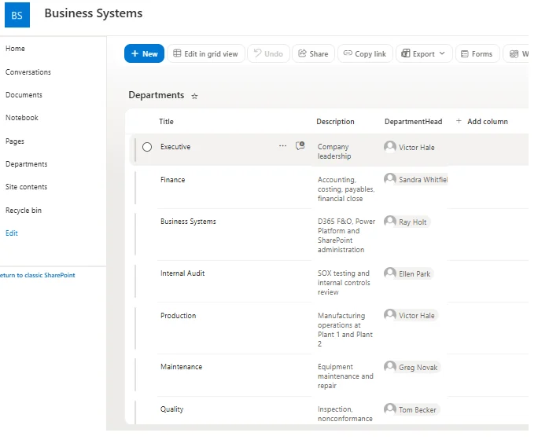
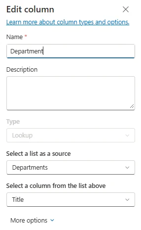
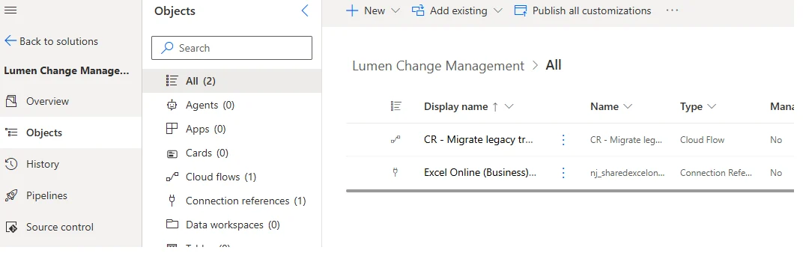
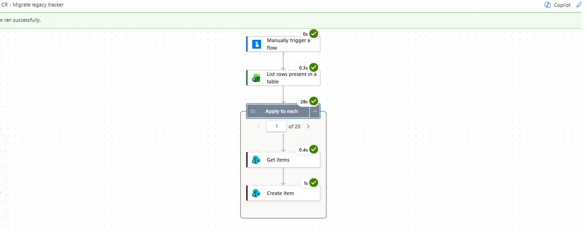

Data modeling · Entra ID provisioning · Power Automate migration · Lumen Photonics lab
Approach highlighted
Modeling realistic master data first, then loading it with repeatable, scripted processes (bulk import, Graph PowerShell and a solution-aware Power Automate migration) instead of entering it by hand.
Project Summary
To test SharePoint permissions and segregation of duties properly, the lab needed real roles: requesters, approvers, an implementer who isn't the deployer, and an auditor who can read everything and change nothing. Lumen Photonics is a fictional fiber laser manufacturer with a headquarters and two plants, built in a Microsoft 365 test tenant with 24 employees, nine departments and the reference data an ERP would expect.
Master Data Before Transactions
The reference tables were designed first, because every transaction (change requests, downtime, production orders) points back at them. Each one maps to its equivalent in Dynamics 365 Finance & Operations.
| Table | Rows | Holds | F&O equivalent |
|---|---|---|---|
| Sites | 3 | Headquarters, Plant 1 (chip fab), Plant 2 (fiber laser assembly) | Sites |
| Departments | 9 | Finance, Production, Quality, Business Systems, Internal Audit and more | Operating units |
| Cost Centers | 10 | Production split by plant, so one department is costed separately per site | Financial dimension |
| Shifts | 3 | Office day shift and two production shifts | Calendars / working times |
| Employees | 24 | Title, department, site, cost center, manager, shift and change request role | Workers |
The Organization
Roles were chosen so that every control could be tested by a real person. Business Systems is split into an analyst who configures changes, a manager who deploys them and a developer, so the "implementer is never the deployer" rule can be shown. The internal auditor reports outside the operations and finance chains.
| Name | Title | Department | Site | Manager | Change request role |
|---|---|---|---|---|---|
| Victor Hale | VP Operations | Executive | HQ | — | Escalation approver (Operations) |
| Sandra Whitfield | Chief Financial Officer | Finance | HQ | — | Escalation approver (Finance) |
| Grace Lin | Controller | Finance | HQ | Sandra Whitfield | Financial approver |
| Priya Nair | Cost Accountant | Finance | HQ | Grace Lin | Requester |
| Marcus Webb | Accounts Payable Specialist | Finance | HQ | Grace Lin | Requester |
| Ray Holt | Business Systems Manager | Business Systems | HQ | Sandra Whitfield | Deployer (moves changes to production) |
| Maya Chen | Business Systems Analyst | Business Systems | HQ | Ray Holt | Implementer (configures in sandbox) |
| Owen Patel | D365 F&O Developer | Business Systems | HQ | Ray Holt | Developer |
| Ellen Park | Internal Auditor | Internal Audit | HQ | — | Auditor (read-only) |
| Carla Mendes | Plant 1 Production Manager | Production | PLT1 | Victor Hale | Process-owner approver (Plant 1) |
| Jake Morrison | Shift Supervisor | Production | PLT1 | Carla Mendes | Requester |
| Aisha Bello | Production Operator | Production | PLT1 | Jake Morrison | None |
| Dana Reyes | Plant 2 Production Manager | Production | PLT2 | Victor Hale | Process-owner approver (Plant 2) |
| Luis Ortega | Shift Supervisor | Production | PLT2 | Dana Reyes | Requester |
| Hannah Cole | Shift Supervisor | Production | PLT2 | Dana Reyes | Requester |
| Ben Tran | Production Operator | Production | PLT2 | Luis Ortega | None |
| Sofia Ramirez | Production Operator | Production | PLT2 | Hannah Cole | None |
| Greg Novak | Maintenance Supervisor | Maintenance | PLT2 | Victor Hale | Requester |
| Tyler Brooks | Maintenance Technician | Maintenance | PLT2 | Greg Novak | None |
| Tom Becker | Quality Manager | Quality | PLT2 | Victor Hale | Requester / consulted |
| Nina Kowalski | Quality Engineer | Quality | PLT2 | Tom Becker | None |
| Ian Fletcher | Supply Chain Manager | Supply Chain | HQ | Victor Hale | Process-owner approver (Supply Chain) |
| Rachel Kim | Production Planner | Supply Chain | HQ | Ian Fletcher | Requester |
| Derek Shaw | Manufacturing Engineer | Manufacturing Engineering | PLT2 | Victor Hale | Consulted (routes) |
Identity: Bulk Import, Then Scripted Managers
Users were created with the Microsoft 365 admin center's bulk import, after regenerating the CSV to match Microsoft's template headers exactly, the most common reason a bulk import fails. Managers aren't supported by bulk import, so they were set with Microsoft Graph PowerShell from the same reference file, then verified with a second query rather than assuming the script worked.
$rows = Import-Csv ".\employees_reference.csv"
foreach ($row in $rows) {
if ([string]::IsNullOrWhiteSpace($row.Manager)) { continue }
$manager = Get-MgUser -UserId "$($row.Manager)@$domain"
Set-MgUserManagerByRef -UserId "$($row.Username)@$domain" -BodyParameter @{
"@odata.id" = "https://graph.microsoft.com/v1.0/users/$($manager.Id)"
}
}The script ran with the execution policy relaxed for that PowerShell window only, the smallest change that does the job, and was read before it was run. Managers matter later: approval escalation looks up an approver's manager.
Groups With Names That Say What They Do
Access-granting security groups use an SG- prefix and assigned membership: SG-CR-Approvers, SG-Internal-Audit and SG-All-Employees. The last one exists because the tenant hides the "Everyone except external users" claim, and an existing "All Company" group turned out to contain only the administrator. Checking membership before granting access caught it.
Lookups to Reference Data
The Departments list was created first, because a lookup column can only point at a list that already exists. The department head is a Person column, so a flow can find a department's head without hard-coding names.


Migrating the Legacy Tracker
The 20 legacy change requests were treated as a migration from the old Excel tracker, not as test data typed in by hand. A manually triggered cloud flow, built inside a solution so it can move between environments, reads an Excel table and creates one list item per row. It looks up each department's ID, sends null instead of empty strings for optional fields, and applies the same fail-safe SOX default as the list.
// Department lookup: find the Departments item ID for this row
first(outputs('Get_items')?['body/value'])?['ID']
// Optional fields: send null instead of an empty string
if(empty(items('Apply_to_each')?['TargetReleaseDate']), null,
items('Apply_to_each')?['TargetReleaseDate'])
// Fail-safe default: anything not explicitly 'No' loads as SOX relevant
if(equals(items('Apply_to_each')?['SOXRelevant'], 'No'), false, true)

A Migration Limitation, Documented
Every migrated item shows the migration account as Created By, because SharePoint sets that field itself. The original requester and submission date were kept in dedicated Requester and Submitted On columns. The trade-off is recorded rather than hidden: because "see only your own" is based on Created By, original requesters can't see their migrated requests, while approvers and auditors can.
Download the Seed Data
Employees · Departments · Cost centers · Sites · Shifts · Change requests · Line status
Skills Demonstrated
Master data modeling, ERP-aligned reference data, Microsoft 365 bulk user import, Microsoft Graph PowerShell, Entra ID security groups and naming conventions, SharePoint lookup columns, Power Automate data migration, solution-aware flows, expression-based data cleansing, and documenting migration limitations.
More from this SharePoint lab